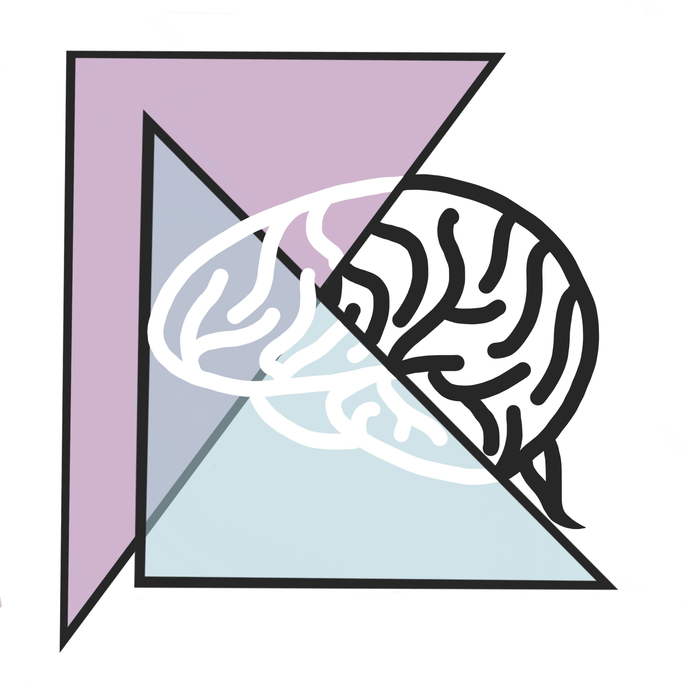

Mindyoga
Date - Jan 2021-Jun 2022
Role - HCI Researcher
Skills - User research, Rapid prototyping, Academic writing
Date - Jan 2021-Jun 2022
Role - HCI Researcher
Skills - User research, Rapid prototyping, Academic writing
This research project was advised by Prof. Haoqi Zhang and Leesha Maliakal Shah (PhD) as part of the Design, Technology, and Research (DTR) program at Northwestern University. Our research was published at ACM CHI 2022 (read the full paper here and see our poster here).
Metacognitive behavior can be thought of as the ways in which we work and think.
Metacognitive behavior can be thought of as the ways in which we work and think.
This encompasses things like: how we manage our time, our attitudes towards our work, when and how we decide to seek help, etc. These behaviors can impact the quality and efficiency of our work, so it is important that we reflect on our behaviors frequently in order to regulate them.
Problem Statement: student-researchers, especially novice student-researchers, may not know what their metacognitive behaviors are or how to improve them.
Solution: use expertise from mentors to guide metacognitive improvements.
Student researchers are often advised by more experienced researchers and faculty members. By using their feedback, we can help students identify weaknesses in their metacognitive behaviors. However, students are not always aware they are receiving metacognitive feedback. Novice researchers especially tend to focus on more concrete, practical feedback, with one user reporting:
"I never really think about metacognitive feedback, only practical or project-based feedback"
Revised Problem Statement: student-researchers are not always aware they are receiving metacognitive feedback from their mentors.
Solution: help students parse out metacognitive feedback by categorizing it as either practical or metacognitive to increase their awareness of the metacognitive feedback they are receiving.
In our prototype we added a table that asks users to write out each piece of feedback they received from their mentors in the first column and then categorize it at either practical or metacognitive feedback in the second column.
Solution: help students parse out metacognitive feedback by categorizing it as either practical or metacognitive to increase their awareness of the metacognitive feedback they are receiving.
In our prototype we added a table that asks users to write out each piece of feedback they received from their mentors in the first column and then categorize it at either practical or metacognitive feedback in the second column.
Initial Storyboards & Prototype
Findings: Practical Feedback vs. Metacognitive Feedback
While our study revealed that frequent use of our prototype did increase students' awareness of their metacognitive behaviors, we found that the binary categorization of feedback was not flexible enough for how mentors actually gave feedback to their mentees. Many times mentor feedback contained both metacognitive and practical elements, instead of being strictly one or the other.
One mentor gave their students feedback on gathering data, saying that they should believe in their work as expert designers and use prior knowledge and expertise from past user studies they have conducted.
Metacognitive element: Believe in your past work and your abilities as design researchers. You don't need more evidence to re-affirm your knowledge.
Practical element: Use results from past user studies to inform your design decisions, rather than spending extra time running a new study to gather data you already have.
One mentor gave their students feedback on gathering data, saying that they should believe in their work as expert designers and use prior knowledge and expertise from past user studies they have conducted.
Solution: help students parse out metacognitive feedback by categorizing it as either practical or metacognitive to increase their awareness of the metacognitive feedback they are receiving.
Metacognitive element: Believe in your past work and your abilities as design researchers. You don't need more evidence to re-affirm your knowledge.
Practical element: Use results from past user studies to inform your design decisions, rather than spending extra time running a new study to gather data you already have.
Major Finding - A piece of feedback can have both metacognitive and practical elements. Our binary classification of feedback is not flexible enough to support this charactereistic.
Next Steps: Unifying Practical and Metacognitive Goals
To reflect the duality of mentor feedback, we propose and updated design that allows users to identify and connect the practical and metacognitive elements of their mentor feedback, as shown in the following storyboards and diagrams.